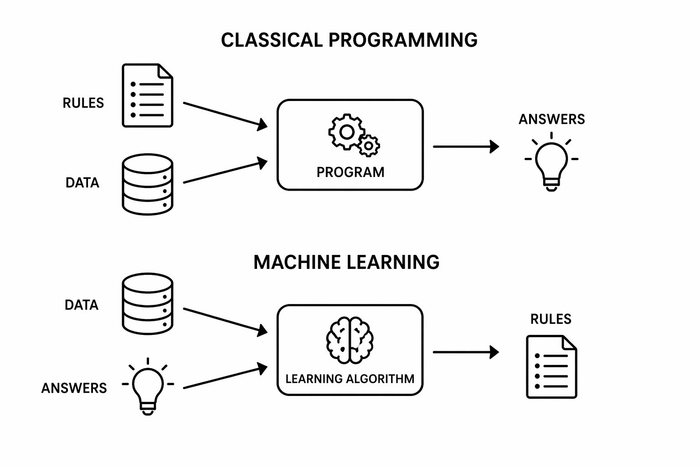

Notes: Session 6: Machine learning 1
2026-04-20: 80 min
| Time (min) | Duration | Topic | Additional materials |
|---|---|---|---|
| 0–23 | 23 | Foundations | |
| 23–46 | 23 | The Generalization Problem | |
| 46–68 | 22 | The Machine Learning Workflow | |
| 68–90 | 22 | Performance |
TODO:
- Suggest code reading/understanding exercises (e.g., “what are the next steps of the procedure?”, “annotate what is done in the code blocks”, “give pseudocode”, “are there any errors (e.g., switched code blocks)?”)
Group work topics
Check which topics were selected by groups, identify potential overlap and guide topic selection.
Supervised ML
Note: moved unsupervised ML (clustering) to EDA (mention here only as an example of unsupervised ML)

- Start by sketching the two process boxes
- Illustrate what “classical programming” means: manually codifying all conditions and special cases to make the prediction
- Ask students what the input/output is
- Highlight for machine learning: at training time, to make predictions, we will use the rules in the sense of classical programming
Reminder: In the earlier lectures, we already saw appropriate evaluation measures (confusion matrix, F1, … for classification, \(R^2\) for regression)
Highlight: The objective function typically includes a loss function (e.g., RSS in OLS) that quantifies how well or poorly the model fits the observed data. (May also include regularization terms)
Bias-Variance tradeoff
Variance: draw many training datasets from the population, train the model on each one, analyze fluctuation in predictions
Generalization Problem
Question (go back to the supervised-ML slide showing “Dataset + Learning algorithm (model class + objective + optimizer) → predictive model”): How can we improve generalization (performance on unseen data)?
- Use train/test splits (or cross-validation) to evaluate generalization performance
- Control model complexity through regularization by modifying the objective/loss function (e.g., penalizing too many features or overly complex nonlinear relationships)
Emphasize the objective-function connection mathematically:
\[\min_{\theta}; \text{Loss}(\theta) + \lambda \cdot \text{Complexity}(\theta)\]
That equation often helps students understand that regularization literally changes the optimization target.
Training/Test data
Highlight: tabular data (features in rows). Only for deep learning, unstructured data can be used as an input (learns patterns automatically)
Problems with fixed training and test samples
Optimizing the model training: refers to
- Hyperparameter tuning
- Feature engineering decisions
- Model design choices
- Training procedure tweaks
Problem: the test data does not remain “unseen”
“Endogenization of the test data” means that the test set—supposed to be an external, independent benchmark—becomes internally involved in the model-building process.
Selection bias
Model-selection bias occurs when a model appears better simply because many hyperparameter configurations were tried and the best-performing one was selected.
Grid search and cross-validation reduce the risk of selecting a hyperparameter setting that only performs well on a single accidental split of the data.
- Grid search explores different hyperparameter configurations systematically.
- Cross-validation evaluates each configuration robustly across multiple train/validation splits.
Key point:
- Grid search performs model selection.
- Cross-validation provides a more reliable estimate of generalization performance during that selection process.
- A final untouched test set helps address remaining model-selection bias.
Exercises
2026-04-20: 75 min (Data Analytics with Python.pdf : partitioning (p.20) and cross-validation (p.41).)
Note: this exercise should be a focused work-through-a-full-cross-validation effort. Announce that we will treat ML algorithms as black boxes for now (except for using their specific hyperparameters). They all have to be implemented according to the same workflow.
Materials
Nice introduction: https://kuleshov-group.github.io/aml-website (careful: copyright!)
Lecture: https://harvard-iacs.github.io/2019-CS109A/lectures/lecture7/presentation/Lecture7_ModeLSelectionRegularization.pdf
https://github.com/kuleshov/cornell-cs5785-2025-applied-ml/blob/main/lecture-notes/lecture2-supervised-learning.ipynb
https://jose.theoj.org/papers/10.21105/jose.00239 -> slides not useful for ABD -> Exercises: penguin dataset, but maybe useful as an inspiration.
https://github.com/Cambridge-ICCS/practical-ml-with-pytorch/tree/main/exercises
instructive animations on neural networks etc.: https://www.3blue1brown.com/topics/neural-networks
Andrew Ng lecture: https://www.youtube.com/watch?v=jGwO_UgTS7I
https://cs229.stanford.edu/